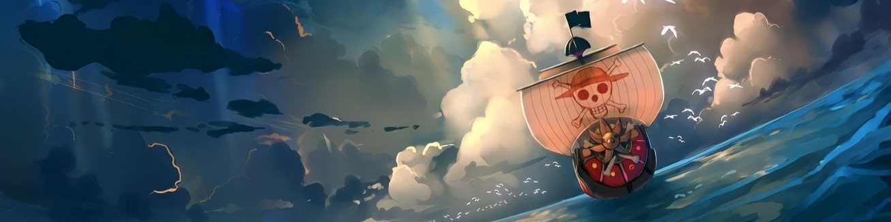
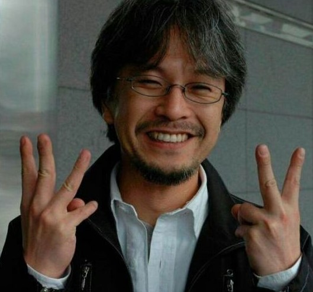

A ORIGEM DO PIRATA QUE ESTICA
One Piece é uma obra japonesa criada por Eiichiro Oda, cuja história começou a ser publicada como mangá em julho de 1997. Sua adaptação para anime estreou em outubro de 1999, levando essa aventura para as telas e conquistando milhões de fãs ao redor do mundo. A história se passa em um mundo formado por vastos oceanos, ilhas misteriosas e diferentes povos. Acompanhamos Monkey D. Luffy e sua tripulação em uma jornada marcada por amizades, batalhas, descobertas e desafios, enquanto navegam em busca do lendário tesouro conhecido como One Piece.

EIICHIRO ODA
Nascido em 1975, Eiichiro Oda é o mangaká japonês responsável pela criação de One Piece. Com sua imaginação e dedicação, construiu um universo que encanta gerações desde 1997.
O INÍCIO DA ERA DOS PIRATAS

Gol D. Roger, o lendário Rei dos Piratas, foi capturado e executado, deixando para trás um tesouro inestimável conhecido como One Piece. Sua morte desencadeou a Grande Era dos Piratas, inspirando aventureiros de todo o mundo a buscar fama, fortuna e liberdade nos mares.

"Querem o meu tesouro? Eu vou contar!
Riqueza, fama, poder... Nele está tudo o que este mundo pode dar. Fiquem à vontade para pegá-lo! Vão para o mar! Meu tesouro é de quem encontrar!""